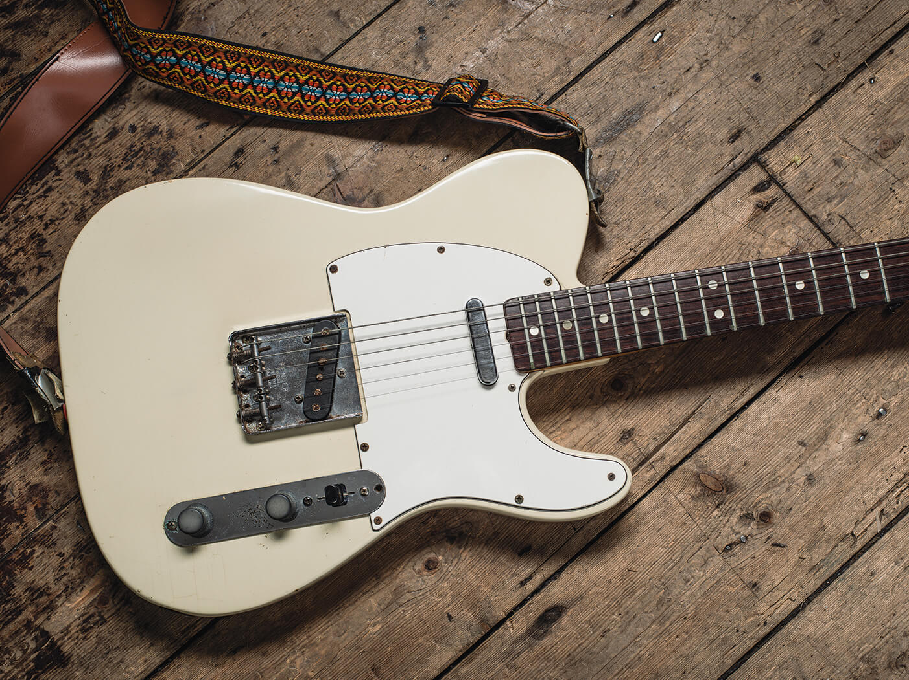

The Fender Telecaster, colloquially known as the Tele /ˈtɛli/,[1] is an electric guitar produced by Fender. Together with its sister model the Esquire, it was the world's first mass-produced, commercially successful[note 1] solid-body electric guitar. Its simple yet effective design and revolutionary sound broke ground and set trends in electric guitar manufacturing and popular music.
Introduced for national distribution as the Broadcaster[2] in the autumn of 1950 as a two-pickup version of its sister model, the single-pickup Esquire, the pair were the first guitars of their kind manufactured on a substantial scale. A trademark conflict with a rival manufacturer Gretsch Broadkaster led to the guitar being renamed in 1951. Initially, the Broadcaster name was simply cut off of the labels placed on the guitars (leading to a limited run of nameless guitars known as "No-casters") and later in 1951, the final name of Telecaster was applied to the guitar to take advantage of the advent of television. The Telecaster quickly became a popular model, and has remained in continuous production since its first incarnation.
Like the three-pickup Stratocaster which followed it in 1954, the Telecaster is a versatile guitar and has been used in many genres, including country, reggae, rock, pop, folk, soul, blues, jazz, punk, metal, alternative, indie rock, and R&B. The base model has always been available, and other than a change to the pickup selector switch configuration, a thinning of the neck, and a few variations on the bridge design, it has remained mostly unchanged from the 1950s. Several variant models have been produced over the years including those with different pickup configurations and electronics, semi-hollow body designs, and even a twelve string model.
The Fender Telecaster was developed by Leo Fender in Fullerton, California, in 1950. In the period roughly between 1932 and 1949, several craftsmen and companies experimented with solid-body electric guitars, but none had made a significant impact on the market. Leo Fender's Telecaster was the design that made bolt-on neck, solid body guitars viable in the marketplace
Fender had an electronics repair shop called Fender's Radio Service where he first repaired, then designed, amplifiers and electromagnetic pickups for musicians — chiefly players of electric semi-acoustic guitars, electric Hawaiian lap steel guitars, and mandolins. Players had been "wiring up" their instruments in search of greater volume and projection since the late 1920s, and electric semi-acoustics (such as the Gibson ES-150) had long been widely available. Tone had never, until then, been the primary reason for a guitarist to go electric, but in 1943, when Fender and his partner, Clayton Orr "Doc" Kauffman, built a crude wooden guitar as a pickup test rig, local country players started asking to borrow it for gigs.[6] It sounded bright and sustaining
Fender's operations expanded to include a line of lap steel guitars, and several of the features of those instruments would be borrowed for a new electric solid-bodied guitar. In 1949, he began prototyping the new instrument.[7] Though it was long understood that solid construction offered great advantages in electric instruments (and by the 1930s, Audiovox had offered a solid-body makeshift electric guitar), no commercial solid-body had ever caught on. Leo felt that it could be successfully done. It was designed in the spirit of the solid-body Hawaiian guitars manufactured by Rickenbacker — small, simple units made of Bakelite and aluminum with the parts bolted together — but with wooden construction. (Rickenbacker, then spelled "Rickenbacher", also offered a solid Bakelite-bodied electric Spanish guitar in 1935 that seemed to presage details of Fender's design.)